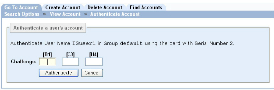

|
IdentityGuard Server 13.0 Administration Guide |
|
IdentityGuard Server 13.0 Administration Guide |
If users contact an administrator by phone or other out-of-band method requesting changes to their information, the administrator can authenticate each user using their assigned grid card grid. If the user has a PVN, there is no requirement to supply the PVN during this authentication process.
To authenticate a user with a grid card
1. Log in to the Administration interface (Log in and out of the Administration interface).
2. On the main menu, click User Accounts.
3. Find a specific user in one of two ways:
● Use the Go To Account tab (see Search for information about a specific user).
● Use the Find Accounts tab (see Searching for user information).
4. Under Authentication Types, click Cards.
5. Click Authenticate Account.
The Authenticate Account page appears.

6. Ask the user to provide values for the coordinates in the Challenge fields.
7. Type the user’s response in the appropriate fields to authenticate the user’s grid card.
8. Click Authenticate.
The user’s grid card is authenticated.
Note: Whenever the administrator performs the grid authentication on behalf of the user, the random challenge generation algorithm is always used, but usage statistics are not gathered, regardless of what is configured in the grid card policy.